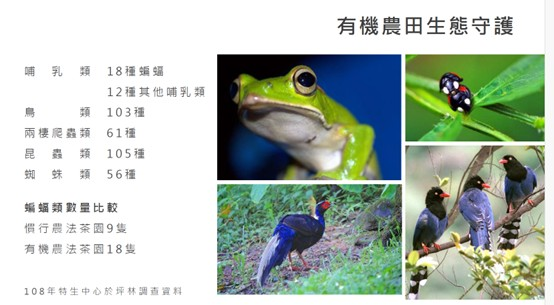

在開啟低碳生活前，必先了解的「溫室氣體」與「溫室效應」
溫室氣體（Greenhouse Gas, GHG）係指易吸收太陽輻射的氣體，將太陽熱能保留在地球中。溫室氣體吸收輻射能量後再向四面八方散熱，使近地表大氣保持溫暖，這種現象就是氣候學所稱的「溫室效應」。如果沒有溫室氣體，地球表面平均溫度會從現在的溫度下降到攝氏零下以下。溫室氣體愈多溫室效應愈強，地球表面溫度也愈高，目前我們所面臨的就是溫室氣體劇增，導致全球氣溫上升，地球暖化將引發一系列的氣候變遷，如極端天氣事件、海平面上升等。
 |
溫室氣體有些是自然產生的，例如水蒸氣、火山爆發釋放的二氧化碳，以及生物分解產生的甲烷等。目前造成溫室氣體劇增問題的是人為排放，自從人類工業革命以來，因經濟活動、產業建設以及化石燃料的使用，都會讓溫室氣體增加，其中燃燒化石燃料所產生的二氧化碳（CO2）是最大量的溫室氣體，也是造成全球暖化的主要因素。
其他重要的溫室氣體還有甲烷（CH4）主要來自於農業和廢棄物處理；氧化亞氮（N2O）主要來自於農業活動和工業生產；氟氯碳化物（CFCs, HFCs, HCFCs）是人造化學物質，具有強烈的溫室效應，並會破壞臭氧層。二氧化碳、甲烷、氧化亞氮、氟氯碳化物（CFCs）、氟氯烴（HCFCs）、氫氟碳化物（HFCs）等生命期長達數10年以上並穩定存在大氣層中。
1.5°C 重新認識氣候變遷
自2008年以來，包括聯合國在內的許多國際組織已經設定了攝氏2度為地球均溫上升的「上限」值，代表若地球均溫上升幅度超過工業革命之前攝氏2度，地球氣候系統的穩定性將受到破壞。根據聯合國政府間氣候變遷專門委員會（IPCC）報告，若全球無法將升溫控制在1.5 ℃內，地球將面臨關鍵性的轉變。IPCC認為在過去的一個世紀裡，汽車、飛機、發電廠、工廠中燃燒大量的煤和石油，排放大量的CO2，增強了溫室效應，2024全球增溫突破1.5℃大關凸顯如今氣候衝擊和風險更加惡化，且比預期更早發生。若要改變這個未來，全球二氧化碳排放量就必須要在2050年淨零。
註：淨零不代表完全不排放，而是盡可能減少排放，並透過各種方式將剩餘的排放量進行抵銷，例如：使用再生能源、提升能源效率、發展碳捕捉技術..等。
手刀開啟 1.5°C 低碳生活
低碳生活是從個人出發，選擇造成較少二氧化碳排放的生活模式，可包含節約能源與綠色生活兩大部分，節約能源可泛指省水、省電、省油與資源回收等；而綠色生活則是以對環境傷害最小的方式來完成生活之中的食衣住行，例如綠色建築、搭乘大眾運輸工具、少開車多走路等。
開啟「1.5°C 低碳生活」，了解自身碳足跡、培養碳直覺、在生活中的飲食、消費、移動、休閒等選擇中盡可能地降低碳排，如少肉多菜、生活節能等行為，根據報告指出，這些看似老生常談的行動，累積起來可達40-70%的減量貢獻，大家一起響應起來成果不容小覷。以下為我們可採取的行動：
在飲食方面 - 任何食物的栽種、飼養、包裝、運送、烹調，都需要耗費能源，排放溫室氣體。我們要愛惜食物與綠色低碳飲食，選用在地與當令食材，購買驗證合格取得標章的農產品及盡量選擇裸賣的蔬果可減少化學肥料及農藥對環境生態的污染與衝擊還有減少廢棄包材。避免使用一次性免洗餐具減少飲用瓶裝水（包裝水）減少廢棄物產生，採用有環保標章的洗碗精減少水污染。
 |
在衣著方面 - 優先選購天然材質、未經漂染、低污染等服裝。以適合的衣著來幫助調節身體溫度，可避免冷氣及暖氣等不必要的浪費。減少衣物乾洗次數，水洗使用有環保標章的洗衣清潔劑對環境、人體健康的危害都較小，採用日曬晾乾不使用烘衣機並降低熨燙的能源耗用。
|  |
在居家生活方面 - 裝潢使用環保標章建材及綠建材。採買有省電標章的家電用品及馬桶選購省水標章，可節約照明電能與減少自來水使用量。植栽美化環境及室內綠化，適量綠色植物可吸收二氧化碳的排放。
 |
在行車交通方面 - 路程短時可多走路或以U-bike代步，健康又環保。路程較遠時可選擇搭乘大眾運輸工具，就算一個禮拜只有幾天改搭乘大眾交通工具，都是碳排減量的貢獻。若遇公車捷運不便到達目標地點，這時就可考慮使用共享汽機車如iRent / WeMo/ GoSHARE….等工具，是雙北間移動便利又聰明的選擇。
在育樂及購物方面 - 關掉家中的電腦、電視，多到戶外休閒及運動。觀光旅遊優先搭乘大眾運輸工具，若是與朋友一同出遊或剛好有一樣的目的地，就可以共乘同一台車出門，不僅可以共同分擔車油錢，也可以減少溫室氣體的排放、降低污染。
降低物慾循環使用，若需購物時，盡量選擇有公平貿易標籤／環保標章商品的商品，該認證要求多項與環境有關的標準，例如：土壤、水源、碳排放量、農業化學品等，是環境保護的要求與認證。環保標章則是經政府認可「可回收、低污染、省資源」的產品與服務，同時也是政府為鼓勵環保廠商所使用的經濟工具，因此在同一類產品中，只有環保表現前20-30%能獲得頒發。
不購買過度包裝的商品，許多包材幾乎都是只供一次性使用的塑膠製品，而塑膠產品不論是生產或是後續垃圾處理都會造成碳排放。有報告預估，在2050年時因塑膠排放的溫室氣體會累積高達56億噸，占全球碳預算10-13%。
首選有環保意識的品牌，支持碳足跡標籤或減碳標籤商品，碳足跡標籤是「一個產品從原料取得，經過工廠製造、配送銷售、消費者使用到最後廢棄回收等生命週期各階段所產生的溫室氣體，經過換算成二氧化碳當量的總和」，而減碳標籤則代表該產品承諾在5年內碳足跡減量3%以上。
我們可落實在日常生活中的減碳行為實在不少，依據全球環境戰略研究所（IGES）的研究，若要達到升溫不超過1.5℃的目標，每人的碳排放目標在2030年前，平均數字需來到2.5至3.2噸。在氣候危機之下，減碳已是刻不容緩的全民運動，不只政府、企業需積極推動淨零轉型，我們的生活選擇也是關鍵。「我們需要前所未有的努力。」小至一餐的飲食、大至生活用電、購車等，我們都有更低碳的選擇，願你我都能為守住1.5°C帶來影響力，GOGO~